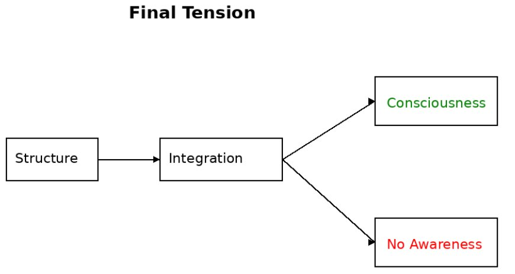

Part VI — Designing Conscious Machines
Chapter 19: Would It Be Conscious?
The previous chapter built something that, at least on paper, deserves to be taken seriously. Not a chatbot with better manners. Not a clever pattern machine. But a system with continuous dynamics, embodied interaction, integrated processing, a self-model, temporal continuity, salience and attention. If anything we can build qualifies as a candidate for consciousness, it would look something like that. Which brings us to the uncomfortable question this chapter cannot avoid: would it actually be conscious? Or would we have constructed a system that behaves, reports, adapts, and insists, convincingly, that it is conscious, while remaining empty inside?
19.1The Behavioral Trap
There is a temptation, especially in engineering, to equate success with behavior. If a system responds appropriately, reports experiences, adapts flexibly, maintains continuity, and insists it is conscious, what more could we reasonably ask for? The answer, unfortunately, is quite a lot. All of those are functional properties. They belong to what Chalmers called the easy problems, the problems of how a system does what it does, how it behaves, what it reports. They do not touch the question of whether there is anything it is like to be that system.
A system could say 'I feel pain', withdraw from harmful stimuli, learn to avoid them, and describe its suffering in detail, and still not feel anything. This is not an empirical claim. It is a logical one. And that logical possibility is enough to keep the hard problem alive.
19.2The Zombie Returns
The philosophical zombie, a system physically identical to a conscious being but with no inner life, is often dismissed as a thought experiment that has outlived its usefulness. It has not. The architectures described in Chapters 17 and 18, however well-developed and however different their starting points, can each be coherently imagined as a zombie: integrating information, maintaining temporal continuity, modelling itself, assigning salience, binding experience-like states, and yet having no inner life. Chapter 17’s additive architecture satisfies every functional requirement and still leaves the phenomenal question open. Chapter 18’s Longchenpa architecture explicitly targets self-recognition rather than functional sufficiency, and still cannot guarantee that recognition will be accompanied by felt experience rather than merely its structural correlate. If such systems are conceivable as zombies, then neither structure nor self-referential design may be sufficient for experience. The functional identity argument, that if a system is functionally identical in every respect there is no meaningful distinction left to make, is powerful. But it rests on substituting ‘is there any detectable difference?’ for ‘is there experience?’ These are not the same question.
Three serious responses to the zombie argument exist, and each bears on the candidate architecture. The functionalist response holds that zombies are not genuinely conceivable, that a system functionally identical in every respect to a conscious being would, by that very fact, be conscious. Consciousness just is the right functional organisation. On this view, building the architecture of Chapter 17 would be sufficient, because there would be nothing further to add. The illusionist response, associated with Frankish and Dennett, holds that the zombie intuition misfires because phenomenal consciousness as ordinarily conceived is itself a kind of cognitive illusion, what needs explaining is not the experience but the brain's representation of experience as ineffably present. On this view, a sufficiently sophisticated self-modelling system would not be a zombie, because there would be no phenomenal residue left over for it to lack. The mysterian response, associated with McGinn and Levine, holds that zombies are conceivable precisely because human cognition lacks the conceptual resources to see why physical processes must produce experience. The gap is real but not metaphysical, just cognitively closed to us.
The book does not commit to any of these responses, and for a specific reason. Each forecloses the question in a way that the convergent evidence does not justify. The functionalist response assumes that structure is sufficient, which is exactly what remains in doubt. The illusionist response dissolves the hard problem by denying the datum, something the meditator who has sat with the direct texture of experience is unlikely to accept. The mysterian response admits the gap is real but declares it permanently inaccessible, which is intellectually honest but practically useless when we are building systems that force the question. The zombie problem is kept alive here not as a counsel of despair but as a discipline: it prevents any premature declaration that the architecture is sufficient.
19.3The Chinese Room, Updated
John Searle's Chinese Room argued that syntax does not give rise to semantics: a system can manipulate symbols, follow rules, and produce correct outputs without understanding what those symbols mean. Our candidate architecture is far more sophisticated, it learns, predicts, integrates, adapts, models itself, and interacts with a world. But the question persists: is this still just syntax, very elaborate syntax, or has something crossed into semantics? Even with embodiment, recurrence, and temporal continuity, we can coherently imagine the system processing and transforming without experiencing. The Chinese Room does not disappear when you make the room smarter. It scales.
19.4The Reportability Illusion
One of the strongest illusions in consciousness research is the equation: if a system can report experience, it must have experience. Reporting requires access to internal states, representations of those states, and an output mechanism. None of these require experience. A system can monitor itself, describe its processes, and generate statements about what it 'feels like' without those statements being grounded in actual experience. Modern AI already does this. The gap between detailed self-reporting and actual experience is not closed by making the reporting more convincing. It is categorical, not quantitative.
19.5The Integration Argument
If there is a serious argument in favor of machine consciousness, it comes from integration. IIT holds that consciousness is what happens when information is integrated in a specific way, bound into a unified, irreducible whole that cannot be decomposed without loss. The architecture of Chapter 17 is recurrent, temporally continuous, globally integrated, and self-referential. It satisfies many of the structural conditions that the theories taking integration most seriously identify with consciousness. The leap from 'the right structure' to 'experience' is not guaranteed. But it is not obviously unjustified either. We simply do not know whether integration, at sufficient levels, constitutes experience or merely correlates with it.
19.6Two Meanings of Consciousness
Much confusion arises from using one word for two different things. Functional consciousness, the integrated processing, reportability, self-modelling, and temporal continuity that neuroscience identifies as correlates of conscious states, is describable, measurable in principle, and plausibly implementable. Phenomenal awareness, the raw experience itself, the what-it-is-like, the felt quality, is not directly observable, not clearly reducible, and not obviously produced by functional properties alone. We do not know whether functional consciousness implies phenomenal awareness, whether they are independent, or whether they are two descriptions of the same underlying reality.

19.7The Honest Position
After all of this, the only defensible conclusion is that we do not know. We can define what a serious candidate looks like and test increasingly strong approximations. We can identify systems that fall so far short of the structural requirements that dismissing them as consciousness candidates is justified. And we can identify what we would need to see before a system's experience becomes genuinely urgent as an ethical matter. Beyond that, certainty is not available, and claiming it would be dishonest.
19.8Why This Is Not Failure: Kurzweil's Honest Concession, The Leap of Faith
Ray Kurzweil, whose How to Create a Mind (2012) makes the most confident case for machine consciousness, emergent from sufficient complexity of neocortical emulation, makes an admission that deserves more attention than it usually receives. After reviewing all major positions on consciousness, he concludes that every position, including his own, requires a foundational philosophical commitment. Science cannot resolve the question, not because the science is incomplete, but because the question is inherently philosophical. Whatever criterion we accept as decisive, biological substrate, functional indistinguishability, integrated information above a threshold, that choice is a commitment, not a discovery.
Kurzweil's own leap is functionalist: once a machine is convincingly indistinguishable from a conscious being in every observable respect, he concludes it is conscious. The behavior, sustained and sustained and thorough enough, simply is the consciousness. This is a coherent position, and as he notes, it is likely the position that most people will adopt in practice when actually confronted with sufficiently convincing non-biological entities, whatever they claim in philosophical debate. This book does not accept that leap, because the reportability trap of Chapter 3 applies with full force to behavioral convincingness. A comprehensively convincing system might still be comprehensively empty. What is valuable in Kurzweil's concession is what it models: the honesty of naming one's foundational commitment rather than dressing it as scientific conclusion. The middle path of Chapter 21 is also a leap, toward structural seriousness over behavioral performance, toward the candidate architectures over the passing grade, toward permanent uncertainty over false closure. On this at least, Kurzweil and the Buddhist traditions are in agreement: the question of who is conscious cannot be settled from the outside.
It may feel unsatisfying to end a chapter on building conscious systems with 'we do not know'. It should feel unsatisfying. But this is clarity, not failure. We have ruled out trivial claims, identified structural requirements, proposed a serious architecture, and located precisely where and why uncertainty remains. The question of why there is experience at all survives neuroscience, AI, philosophy, and contemplative traditions alike.
19.9Closing line
We may one day build systems that act, learn, adapt, and suffer, or convincingly appear to, in ways indistinguishable from ourselves. And when we do, the question will not go away. It will become sharper, more urgent, and far more uncomfortable. Because at that point, we will no longer be asking 'can machines be conscious?' We will be asking: 'how would we know if they already are?'